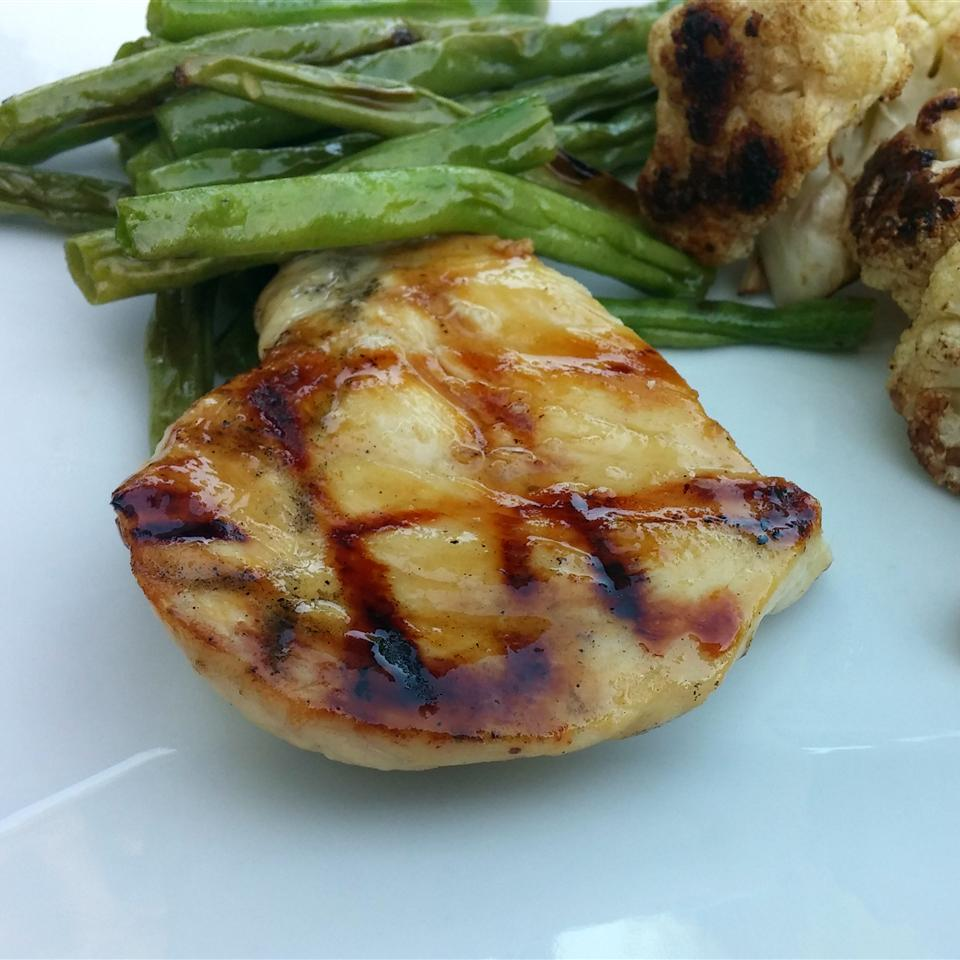

Grilled chicken

Description
Ingredients
- 2 tablespoons butter or margarine
- 1 clove garlic, chopped
- ⅓ cup honey
- 1 tablespoon lemon juice
- 4 skinless, boneless chicken breast halves
Steps
- Preheat a grill for medium heat.
- Melt butter in a skillet over medium heat. Add the garlic, and cook until fragrant, 1 to 2 minutes. Whisk in honey and lemon juice. Reserve half for basting, and brush the other half onto the chicken breasts.
- Lightly oil the grill grate, and place chicken on the grill. Cook for 6 to 8 minutes per side, turning frequently. Baste often during the last 5 minutes. Chicken is done when the meat is firm, and juices run clear.